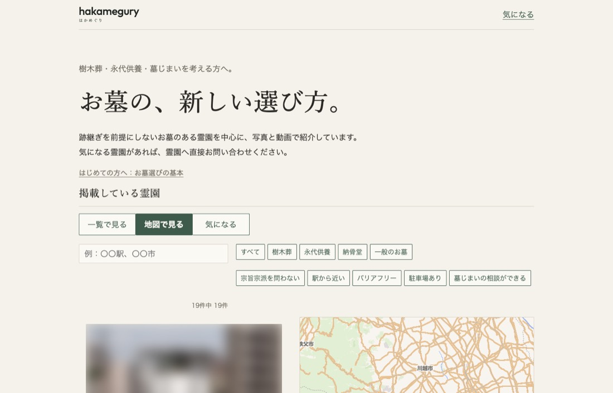
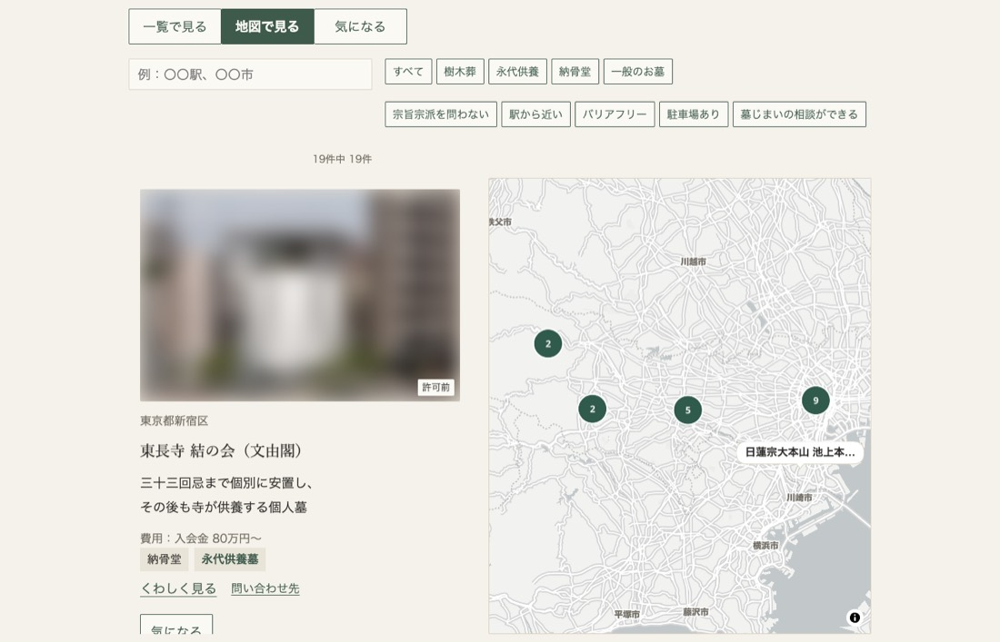
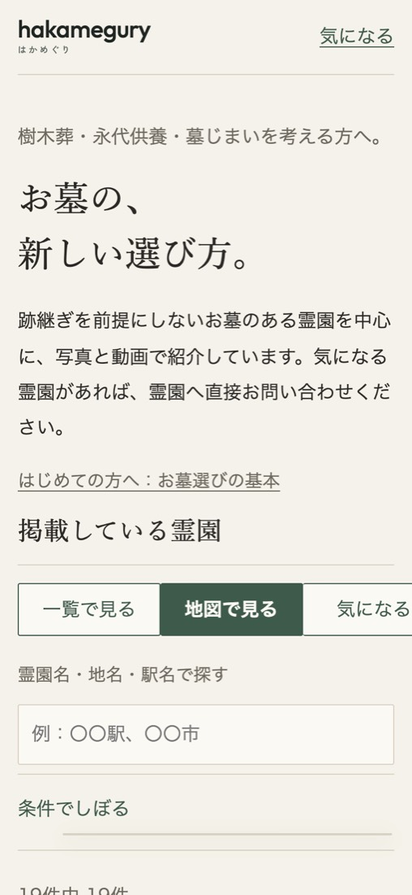
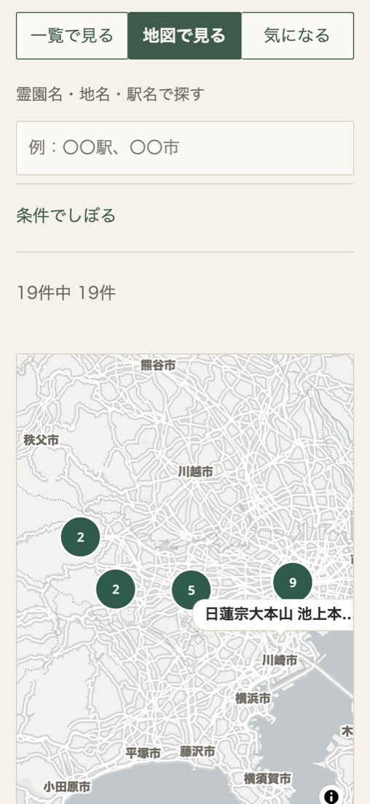

はかめぐり（霊園紹介サイト）｜2026年11月18日｜作成：伊藤
「地図が重くて遅い」の原因を測って突き止め、まず速さと引き継ぎ書の1〜5を直しました。あわせて、使いやすさ・デザインの次の改修案と、ISTのサーバーへの引っ越し案をまとめています。
改修後の見本を開く 地図で見る画面を開く※見本は写真を外しています（霊園の許可前のため、外から見えるこのページには載せない）。写真入りの完全版は、ファイル一式でお渡しします。
同じ「遅めのスマホ回線」（4G電波が弱い時くらい）をまねて、「地図で見る」画面を開くまでを測りました。
測り方：裏側で動くブラウザ（画面を出さないChrome）で、通信の速さを「1.6Mbps・遅れ0.15秒」に絞って計測。直す前は今のNetlify版、直した後は手元のサーバーで同じ条件にしています。
| # | 原因 | 中身 |
|---|---|---|
| 1 | 写真が大きすぎる | 1枚で最大550KB・横1,920px。一覧のカードは横360px程度でしか出さないのに、その3〜5倍の大きさを読んでいた。 |
| 2 | 写真を全部いっぺんに読む | 画面に見えていない下の霊園の写真まで最初に全部読んでいた（約4MB）。地図の読み込みと回線を取り合う。 |
| 3 | 地図の部品を押してから読み始める | 地図を描く部品（MapLibre・約800KB）を「地図で見る」を押した後に読み始めていた。 |
| — | 地図サービス自体（原因ではない） | OpenFreeMap は東京の配信網（Cloudflare）から0.04秒で返ってくる。乗り換えの必要はなし。 |
| # | 内容 | 結果 |
|---|---|---|
| 1 | 地図で選んだ霊園の緑の枠が、一覧・気になるに切り替えても残る | 済地図の画面のときだけ出すように修正 |
| 2 | 地図の画面のくずれ（PC1,400px・スマホ375px） | 済横のはみ出し0px・地図が上の方に出ることを確認 |
| 3 | 永代供養墓がある霊園なのに設備の表が「確認中」 | 済回向院・都立多磨・都立小平の3件を「あり」に（種類の欄と一致） |
| 4 | ファビコン（タブの小さな絵）が古いマーク | 済文字ロゴに合わせた緑の「h」に |
| 5 | 書き出して全ページのエラー確認 | 済19霊園＋一覧・ガイドを書き出し、PC・スマホともエラー0件 |




※画面の写しの写真は、許可前のためぼかしています。
「いいお墓」など大手の霊園サイトと、引き継ぎ書の「使いやすさの要件」を見比べて、効果が大きい順に並べました。どれも追加費用なしで作れます。
| 順 | 改修案 | なぜ | 手間 |
|---|---|---|---|
| A | PCの最初の画面で、探す欄と地図・霊園が見えるようにする（上の大きな見出しを詰めて、探す欄を1画面目に） | 今はPCで開くと見出しだけで1画面が終わり、霊園は下へスクロールしないと出ない。大手サイトは1画面目から「探す」が主役。 | 小 |
| B | 地図表示の左の一覧を「横長の小さいカード」に（写真は左に小さく、文字は右） | 今は1件が縦に大きく、左の欄に1〜2件しか見えない。小さくすれば4〜5件を見比べながら地図を動かせる。 | 中 |
| C | 霊園ページに道しるべ（はかめぐり ＞ 東京都 ＞ 港区）と「前の霊園／次の霊園」 | 要件A-3・A-4（未実装）。3件見比べたい人が、毎回一覧に戻らずに済む。 | 中 |
| D | 霊園ページのヘッダーにも探す欄（虫めがね） | 要件B-1（未実装）。検索から霊園ページに直接来た人が、別の地名で探し直せる。 | 小 |
| E | 絞り込みの横に件数（樹木葬（4））、0件の条件は押せない見た目に | 要件B-3。押してから0件と分かるのを防ぐ。 | 小 |
| F | 地図の札：近い霊園の丸をもう少し細かく分ける・選んだ霊園を地図の中央へ | 関東50件に増やすと、23区は丸1つに固まりやすい。 | 小 |
| G | 写真は「霊園から提供」か「撮影」に切り替える流れを作る（掲載インタビュー時にもらう） | 今の写真はすべて許可前。営業の「無料掲載」とセットで写真の許可・提供をもらえば、そのまま正式公開できる。 | — |
置き場所：アイステの「さくらのVPS」（議事録BOT・SNSダッシュボード・総合窓口LINEツールと同じサーバー）。空き容量は41GBあり、このサイト（約6MB）は問題なく載ります。追加費用は0円です。
アドレス：まずは仮のアドレス（例 hakameguri.153.127.42.158.nip.io）で出し、独自ドメインが決まったら付け替えます。
見られる人：写真が許可前のあいだは、パスワード付き＋検索に出さない設定にします。写真の許可が取れたら外します。
作業：サイトをサーバーに置く → 設定を1つ足す → 反映。同じサーバーの他のツールは止めずに切り替えられます（作業10分ほど）。Netlify版は、引っ越しを確認できた後に小林さん側で止めていただく形です。
このページは確認用です（検索エンジンには出ません）。